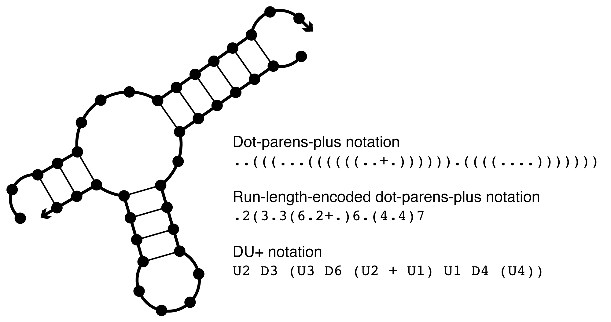
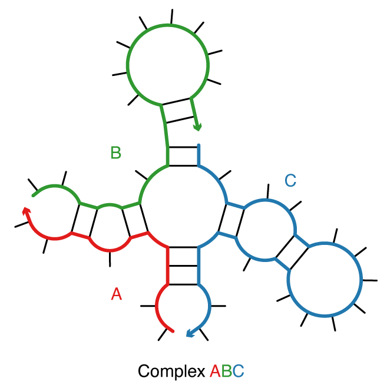
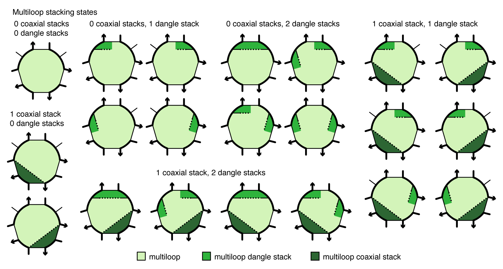
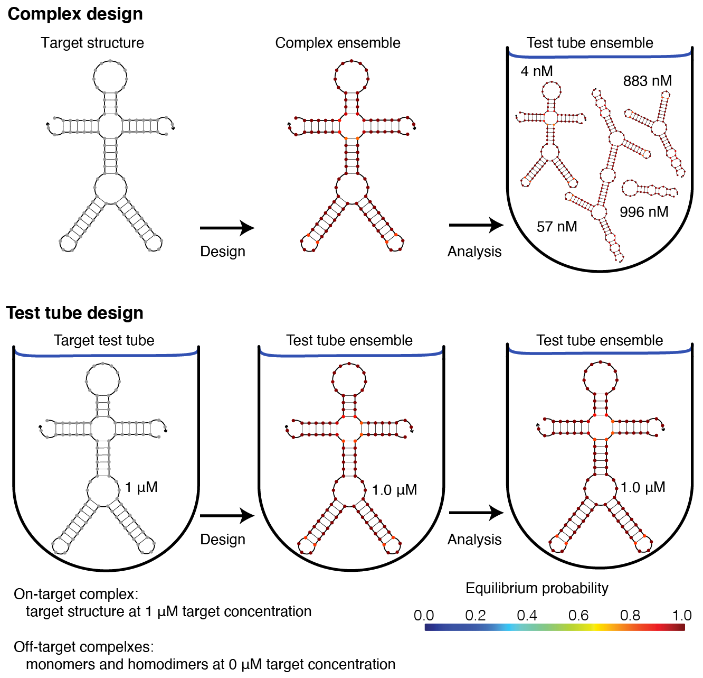
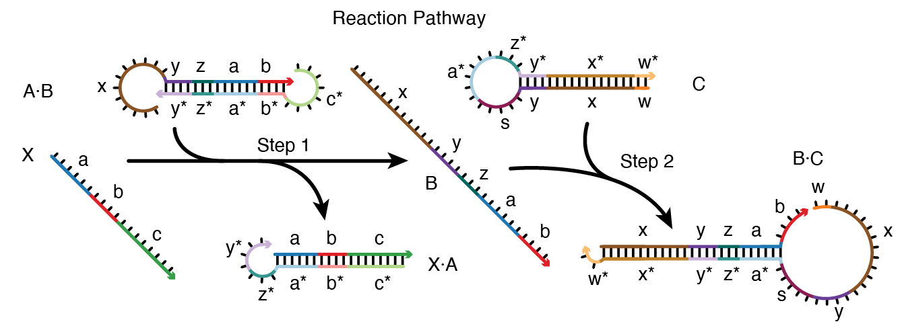

Definitions¶
Sequence¶
The sequence, \phi, of one or more interacting RNA strands is specified as a list of bases \phi^a\in\{\texttt{A},\texttt{C},\texttt{G},\texttt{U}\} for a=1,\dots,|\phi|. For DNA, \phi^a\in\{\texttt{A},\texttt{C},\texttt{G},\texttt{T}\}. Nucleic acid sequences are listed 5' to 3'.
Unlike NUPACK 3, bases in NUPACK 4 are indexed starting with 0 at the 5'-most base of the first strand and ending at the 3'-most base of the last strand.
For example, if a complex has three strands of length 15, 20, and 13, respectively, the fifth base of the third strand has index 39. Valid bases are A, C, G, T, and U. For RNA calculations, T is automatically converted to U, and vice versa for DNA calculations.
Degenerate nucleotide codes¶
Sequence constraints can be specified using IUPAC degenerate nucleotide codes, which for RNA are as follows:
| Code | Nucleotides |
|---|---|
| M | A or C |
| R | A or G |
| W | A or U |
| S | C or G |
| Y | C or U |
| K | G or U |
| V | A, C, or G |
| H | A, C, or U |
| D | A, G, or U |
| B | C, G, or U |
| N | A, C, G, or U |
For DNA, T replaces U.
Sequence distance¶
The sequence distance between two sequences \phi_1 and \phi_2 of equal length (|\phi_1|=|\phi_2|=N) is the number of (possibly degenerate) nucleotide codes that are non-intersecting in the two sequences:
For example, d_\textrm{seq}(ACGU, SSWW) = 2. If \phi_1 and \phi_2 contain no degenerate nucleotide codes, this definition simplifies to the number of nucleotides that are different in the two sequences:
For example, d_\textrm{seq}(ACGU, ACUU) = 1.
Secondary structure¶
A secondary structure, s, of one or more interacting RNA strands is defined by a set of base pairs, each a Watson–Crick pair [A\cdotU or C\cdotG] or a wobble pair [G\cdotU]). For DNA, the corresponding Watson–Crick pairs are A\cdotT or C\cdotG and there are no wobble pairs. A polymer graph representation of a secondary structure is constructed by ordering the strands around a circle, drawing the backbones in succession from 5' to 3' around the circumference with a nick between each strand, and drawing straight lines connecting paired bases. A secondary structure is unpseudoknotted if there exists a strand ordering for which the polymer graph has no crossing lines, or pseudoknotted if all strand orderings contain crossing lines. In NUPACK 4, pseudoknots are excluded from the structural ensemble. A secondary structure is connected if no subset of the strands is free of the others. Secondary structures may be specified one of three ways for NUPACK calculations as described in the following three sections.
Dot-parens-plus notation¶
Each unpaired base is represented by a dot, each base pair by matching parentheses, and each nick between strands by a plus [Zadeh11a]. For example, ((...)) specifies that bases 0 and 1 are paired to bases 6 and 5, respectively, while bases 2, 3, and 4 are unpaired. ((+...)) specifies that bases 0 and 1 of strand 0 are paired to bases 4 and 3 of strand 1.
Run-length encoded dot-parens-plus notation¶
As a shorthand for dot-parens-plus, any sequence of consecutive characters in dot-parens-plus may be replaced by the character followed by a number. For instance, (((((+...........))))) may be written as (5+.11)5.
DU+ notation¶
Using DU+ notation, a duplex is represented by D and an unpaired region of length nucleotides is represented by U [Zadeh10c]. Each duplex is followed immediately by the substructure (specified in DU+ notation) that is ‘enclosed’ by the duplex. If this substructure includes more than one element, parentheses are used to denote scope. A nick between strands is specified by a ‘+’. See the table below for examples.
Example
| Dot-parens-plus | RLE dot-parens-plus | DU+ notation |
|---|---|---|
((((((((((((..........)))))))))))) |
(12.10)12 |
D12 U10 |
((((((((((((+)))))))))))).......... |
(12+)12.10 |
D12 + U10 |
((((((((((((+..........)))))))))))) |
(12+.10)12 |
D12 (+ U10) |
Table: Examples of dot-parens-plus, run-length-encoded (RLE) dot-parens-plus, and DU+ notation.
Example

Figure: Comparison of dot-parens-plus, run-length-encoded dot-parens-plus, and DU+ notation.
Structure matrix¶
In mathematical expressions, it is convenient to represent secondary structure s using a structure matrix S(s) with entries S^{a,b}(s) = 1 if structure s contains base pair a\cdot b and S^{a,b}(s) = 0 otherwise. Abusing notation, the entry S^{a,a}(s) = 1 if base a is unpaired in structure s and 0 otherwise. Hence, S(s) is a symmetric matrix with row and column sums of 1.
Structure distance¶
The structure distance between two secondary structures s_1 and s_2 of equal size (|s_1|=|s_2|=N) is the number of nucleotides in a different base-pairing state in the two structures: \begin{align} d_\textrm{struc}(s_1,s_2)=N-\sum_{1\le a\le N,~1\le b \le N} S_{a,b}(s_1)S_{a,b}(s_2) \end{align}
Complex ensemble¶
Consider a complex of L distinct strands (e.g., each with a unique identifier in \{1,\dots,L\}) corresponding to strand ordering \pi. The complex ensemble \overline\Gamma(\phi) contains all connected polymer graphs with no crossing lines for sequence \phi and strand ordering \pi (i.e., all unpseudoknotted secondary structures) [Dirks07]. (We dispense with our prior convention [Dirks07,Zadeh11a,Zadeh11b] of calling this entity an ‘’ordered complex’‘.) As a matter of algorithmic necessity, all of the dynamic programs in NUPACK operate on complex ensemble \overline\Gamma(\phi) treating all strands as distinct. However, in the laboratory, strands with the same sequence are typically indistinguishable with respect to experimental observables. For comparison to experimental data, physical quantities calculated over ensemble \overline\Gamma(\phi) are post-processed to obtain the corresponding quantities calculated over complex ensemble \Gamma(\phi) in which strands with the same sequence are treated as indistinguishable [Fornace20]. The ensemble \Gamma(\phi)\subseteq\overline\Gamma(\phi) is a maximal subset of distinct secondary structures for strand ordering \pi. Two secondary structures are indistinguishable if their polymer graphs can be rotated so that all strands are mapped onto indistinguishable strands, all base pairs are mapped onto base pairs, and all unpaired bases are mapped onto unpaired bases; otherwise the structures are distinct [Dirks07].

Figure: A complex of 3 strands with strand ordering \pi = ABC.
Test tube ensemble¶
A test tube ensemble is a dilute solution containing a set of strand species, \Psi^0, introduced at user-specified concentrations, that interact to form a set of complex species, \Psi, each corresponding to a different strand ordering treating strands with the same sequence as indistinguishable [Dirks07,Fornace20]. For L strands, there are (L-1)! strand orderings if all strands are different species (e.g., complexes \pi = ABC and \pi = ACB for L=3 and strands A, B, C), but fewer than (L-1)! strand orderings if some strands are of the same species (e.g., complex \pi = AAA for L=3 with three A strands). By the Representation Theorem [Dirks07], a secondary structure in the complex ensemble for one strand ordering does not appear in the complex ensemble for any other strand ordering, averting redundancy. It is often convenient to define \Psi to contain all complex species of up to L_\mathrm{max} strands, although \Psi can be defined to contain arbitrary complex species formed from the strand species in \Psi^0.

Figure: A test tube ensemble containing strain species \Psi^0 = \{A,B,C\} interacting to form all complex species \Psi of up to L_{\rm max} = 3 strands.
Free energy model¶
For each (unpseudoknotted connected) secondary structure s\in\overline{\Gamma}(\phi), the free energy, \overline{\Delta G}(\phi,s), is estimated as the sum of the empirically determined free energies of the constituent loops [SantaLucia98,Xia98,Mathews99,Zuker03,Lu06,Turner10] plus a strand association penalty [Bloomfield00], \Delta G^\textrm{assoc}, applied L-1 times for a complex of L strands: \begin{align} \overline{\Delta G}(\phi,s) = (L-1)\,\Delta G^\textrm{assoc}\, + \sum_{\mathrm{loop} \in s} \Delta G(\mathrm{loop}). \label{eq:dGbar} \end{align}
Loop free energies¶
The loop free energy, \Delta G(\mathrm{loop}), is modeled for the different loop types as follows:
- A hairpin loop is closed by a single base-pair a\cdot b. The loop free energy, \Delta G^\mathrm{hairpin}_{a,b}, depends on sequence and loop size.
- An interior loop is closed by two base pairs (a\cdot b and d\cdot e with a<d<e<b). The loop free energy, \Delta G^\mathrm{interior}_{a,d,e,b} depends on sequence, loop size, and loop asymmetry. Bulge loops (where either d=a+1 or e=b-1) and stacked pairs (where both d=a+1 and e=b-1) are treated as special cases of interior loops.
- A multiloop is closed by three or more base pairs. The loop free energy is modeled as the sum of three sequence-independent penalties: \Delta G^\mathrm{multi}_\mathrm{init} for formation of a multiloop, \Delta G^\mathrm{multi}_\mathrm{bp} for each closing base pair, \Delta G^\mathrm{multi}_\mathrm{nt} for each unpaired nucleotide inside the multiloop, plus a sequence-dependent penalty: \Delta G^\mathrm{terminalbp}_{a, b} for each closing pair a\cdot b.
- An exterior loop contains a nick between strands and any number of closing base pairs. The exterior loop free energy is the sum of \Delta G^\mathrm{terminalbp}_{a, b} over all closing base pairs a\cdot b. Hence, an unpaired strand has a free energy of zero, corresponding to the reference state [Dirks07].

Figure: Canonical loop types for a complex with strand ordering \pi = ABC.
Coaxial and dangle stacking¶
Within a multiloop or an exterior loop, there is a subensemble of coaxial stacking states between adjacent closing base pairs and dangle stacking states between closing base pairs and adjacent unpaired bases. Within a multiloop or exterior loop, a base pair can form one coaxial stack with an adjacent base pair, or can form a dangle stack with at most two adjacent unpaired bases; unpaired bases can either form no stack, or can form a dangle stack with at most one adjacent base pair.

Figure: Coaxial and dangle stacking states for a multiloop.

Figure: Coaxial and dangle stacking states for two exterior loops.
For a given multiloop or exterior loop, the energetic contributions of all possible coaxial and dangle stacking states are enumerated so as to calculate the free energy: \begin{align} \Delta G^\mathrm{stacking} = - k T \log \sum_{\omega\in\mathrm{loop}} \prod_\mathrm{x\in\omega} e^{-\Delta G_x/k T}\label{eq:stack} \end{align} where \omega indexes the possible stacking states within the loop and x indexes the individual stacks (coaxial or dangle) within a stacking state. The free energy of a multiloop or exterior loop is augmented by the corresponding \Delta G^\mathrm{stacking} bonus. Hence, a secondary structure s continues to be defined as a set of base pairs, and the stacking states within a given multiloop or exterior loop are treated as a structural subensemble that contributes in a Boltzmann-weighted fashion to the free energy model for the loop. Let s^\shortparallel\in s denote a stacking state of the paired and unpaired bases in s. We may equivalently define the free energy of secondary structure s in terms of the stacking state free energies \begin{align} \overline{\Delta G}(\phi,s^\shortparallel) \end{align} for all stacking states s^\shortparallel\in s: \begin{align} \overline{\Delta G}(\phi,s) = -kT \log \sum_{s^\shortparallel\in s}e^{-\overline{\Delta G}(\phi,s^\shortparallel)/kT} \label{eq:stacksum} \end{align} Let \overline\Gamma^\shortparallel(\phi) denote the ensemble of stacking states corresponding to the complex ensemble of secondary structures \overline\Gamma(\phi).
Symmetry correction¶
For a secondary structure s\in\Gamma(\phi) with an R-fold rotational symmetry there is in R-fold reduction in distinguishable conformational space, so the free energy \overline{\Delta G}(\phi,s) must be adjusted [Dirks07] by a symmetry correction: \begin{align} \Delta G(\phi,s) &= \overline{\Delta G}(\phi,s) + \Delta G^\mathrm{sym}(\phi,s). \label{eq:dGcorrected} \end{align} where \begin{align} \Delta G^\mathrm{sym}(\phi,s) = kT\log R(\phi,s). \label{eq:dGsym} \end{align} Because the symmetry factor R(\phi,s) is a global property of each secondary structure s\in\Gamma(\phi), it is not suitable for use with dynamic programs that treat multiple subproblems simultaneously without access to global structural information. As a result, dynamic programs operate on ensemble \overline\Gamma(\phi) using physical model \overline{\Delta G}(\phi,s) and then the Distinguishability Correction Theorem [Dirks07] enables exact conversion of physical quantities to ensemble \Gamma(\phi) using physical model \Delta G(\phi,s). Interestingly, ensembles \overline\Gamma(\phi) and \Gamma(\phi) both have utility when examining the physical properties of a complex as they provide related but different perspectives, akin to complementary thought experiments [Fornace20].
Physical quantities¶
Consider a test tube ensemble containing an arbitrary set of strand species \Psi^0 interacting to form an arbitrary set of complex species \Psi. Let j\in\Psi denote a complex with sequence \phi_j and complex ensembles \overline\Gamma(\phi_j) (treating all strands as distinct) and \Gamma(\phi_j) (treating strands with the same seqeuence as indistinguishable). NUPACK calculates [Dirks07,Fornace20] a number of physical quantities over these ensembles.
Partition function¶
For complex j, the partition function evaluated over ensemble \Gamma(\phi_j) treating strands with the same sequence as indistinguishable is denoted
Complex free energy¶
For complex j, the corresponding complex free energy is \begin{align} \Delta G(\phi_j) \equiv -kT \log(Q(\phi_j)). \end{align}
Structure free energy¶
For complex j, the secondary structure free energy treating strands with the same sequence as indistinguishable is denoted \begin{align} \Delta G(\phi_j,s). \end{align} If the physical model includes coaxial and dangle stacking, the structure free energy will include stacking contributions \Delta G^\textrm{stacking}. If the secondary structure s has a rotational symmetry, the structure free energy will include the symmetry correction \Delta G^\textrm{sym}(\phi_j,s).
Equilibrium structure probability¶
For complex j, the equilibrium structure probability of any secondary structure s\in\Gamma(\phi_j) treating strands with the same sequence as indistinguishable is denoted \begin{align} p(\phi_j,s)= e^{-\Delta G(\phi_j,s)/kT}/Q(\phi_j). \end{align}
Boltzmann-sampled structures¶
For complex j, a set of J secondary structures Boltzmann-sampled from ensemble \Gamma(\phi_j) treating strands with the same sequence as indistinguishable is denoted
Equilibrium base-pairing probabilities¶
For complex j, the base-pairing probability matrix \overline P(\phi_j) has entries \overline P^{a,b}(\phi_j)\in[0,1] corresponding to the probability
that base pair a\cdot b forms at equilibrium within ensemble \overline\Gamma(\phi_j), treating all strands as distinct. Here, S(s) is the structure matrix and \overline p(s) the equilibrium probability of structure s\in\overline\Gamma(\phi_j), treating all strands as distinct. Abusing notation, the entry \overline P^{i,i}(\phi) \in [0,1] denotes the equilibrium probability that base i is unpaired over ensemble \overline\Gamma(\phi). Hence \overline P(\phi) is symmetric matrix with row and column sums of 1.
MFE proxy structure¶
For complex j, the free energy of the minimum free energy (MFE) stacking state s_\mathrm{MFE}^\shortparallel(\phi) \in\overline\Gamma^\shortparallel(\phi) treating all strands as distinct is denoted
The corresponding MFE proxy structure is
defined as the secondary structure containing the MFE stacking state within its subensemble. The free energy of the MFE proxy structure is \begin{align} \overline{\Delta G}(\phi,s_\mathrm{MFE’}). \end{align} There may be more than one MFE stacking state, each corresponding to the same or different MFE proxy structures.
Suboptimal proxy structures¶
For complex j, the set of suboptimal proxy secondary structures with stacking states within a specified \Delta G_\mathrm{gap}\ge 0 of the MFE stacking state is denoted
Complex ensemble defect¶
For complex j with target structure s_j, the dimensional complex ensemble defect \begin{align} n(\phi_j,s_j) & = |\phi_j| - \sum_{\begin{array}{c} 1 \leq a \leq |\phi_j|,\ 1 \leq b \leq |\phi_j| \end{array}} \overline P^{a, b}(\phi_j) S^{a,b}(s_j), \end{align} quantifies the equilibrium number of incorrectly paired nucleotides over the ensemble \overline\Gamma(\phi_j) relative to s_j [Dirks04,Zadeh11b]. Here, \overline P(\phi_j) is the equilibrium base-pairing probability matrix and S(s_j) is the target structure matrix for s_j. The normalized complex ensemble defect is then denoted
representing the equilibrium fraction of incorrectly paired nucleotides evaluated over the ensemble of complex j relative to target structure s_j.
For a set of complexes \Psi, the normalized complex ensemble defect can be generalized to a multi-complex ensemble defect \begin{align} {{\mathcal N}} ~\equiv ~\frac{1}{|\Psi|}\sum_{j\in\Psi} {\mathcal N_j} ~~~\in(0,1) \end{align} quantifying the average equilibrium fraction of incorrectly paired nucleotides over the complexes j\in\Psi. As {\mathcal N}_j approaches zero, the complex j is dominated by its target structure, s_{j}.
Complex ensemble size¶
For complex j, the number of secondary structures in the complex ensemble, treating all strands as distinct, is denoted: \begin{align} |\overline\Gamma(\phi_j)|. \end{align} The corresponding number of stacking states is denoted \begin{align} |\overline\Gamma^\shortparallel(\phi_j)|. \end{align}
Equilibrium complex concentrations¶
For the set of complexes \Psi in the test tube ensemble, the set of equilibrium complex concentrations is denoted
\begin{align} x_\Psi \equiv x_j~~~~~~ \forall j\in\Psi, \end{align} These concentrations are the unique solution to the strictly convex optimization problem [Dirks07]:
expressed in terms of the previously calculated set of partition functions Q_\Psi. Here, the constraints impose conservation of mass: A is the stoichiometry matrix such that A_{i,j} is the number of strands of type i in complex j, and x^0_i is the total concentration of strand i present in the test tube. Based on dimensional analysis [Dirks07], the convex optimization problem is formulated in terms of mole fractions, but for convenience, NUPACK accepts molar strand concentrations [i]^0 = x_i^0 \rho_\mathrm{H_2O} as inputs and returns molar complex concentrations [j] = x_j\rho_\mathrm{H_2O} as outputs, where \rho_\mathrm{H_2O} is the molarity of water. Hence, the user specifies the set of molar strand concentrations [i]^0~~\forall i\in\Psi^0 and NUPACK calculates the set of molar complex concentrations [j]~~ \forall j\in\Psi.
Test tube fraction of bases unpaired¶
The equilibrium fraction of bases that are unpaired in the test tube, taking into account the equilibrium concentration and pair probatility matrix for each complex in the test tube ensemble.
Test tube ensemble pair fractions¶
For the test tube ensemble, the ensemble pair fraction
denotes the fraction of A strands that form base pair a_A\cdot b_B. Correspondingly,
denotes the fraction of B strands that form base pair a_A\cdot b_B. These base-pairing observables depend on the set of equilibrium concentrations x_\Psi and the set of base-pairing probability matrices \overline P_\Psi. The number of distinct bases in the test tube is:
representing the total number of bases in all |\Psi^0| strand species. Numbering the distinct bases from 1 to N_{\rm distinct}, the ensemble pair fractions, f_A(a_A\cdot b_B), are then stored as an (asymmetric) N_{\rm distinct}\times N_{\rm distinct} matrix. Abusing notation, the entry f_A^{a_A,a_A} \in [0,1] denotes the equilibrium fraction of base a on strand A that is unpaired in the test tube ensemble. Hence, the matrix of test tube ensemble pair fractions is asymmetric with row and column sums of 1.
Test tube ensemble defect¶
Consider test tube h containing a set of desired on-target complexes, \Psi_h^{\rm on}, and a set of undesired off-target complexes, \Psi_h^{\rm off}. The set of complexes in the test tube is then:
Let each on-target complex, j\in\Psi_h^{\rm on}, have a target secondary structure, s_j, and a target concentration, y_{h,j}. Let each off-target complex, j\in\Psi_h^{\rm off}, have a vanishing target concentration (y_{h,j} = 0) and no target structure (s_j = \emptyset). The dimensional test tube ensemble defect,
quantifies the equilibrium concentration of incorrectly paired nucleotides over the ensemble of test tube h [Wolfe15]. Here, x_{h,j} is the equilibrium concentration of complex j in tube h. For each on-target complex, j\in\Psi^{\rm on}_h, the first term in the sum represents the structural defect, quantifying the concentration of nucleotides that are in an incorrect base-pairing state within the ensemble of complex j, and the second term in the sum represents the concentration defect, quantifying the concentration of nucleotides that are in an incorrect base-pairing state because there is a deficiency in the concentration of complex j. For each off-target complex, j\in\Psi^{\rm off}_h, the structural and concentration defects are identically zero, since y_{h,j}=0. This does not mean that the defects associated with off-targets are ignored. By conservation of mass, non-zero off-target concentrations imply deficiencies in on-target concentrations, and these concentration defects are quantified by the equation above [Wolfe15]. The normalized test tube ensemble defect is then denoted
\begin{align} {\mathcal M}_h\equiv C_h/y^{\rm nt}_h \in (0,1) \end{align} representing the equilibrium fraction of incorrectly paired nucleotides in tube h. Here,
is the total concentration of nucleotides in tube h. As {\mathcal M}_h approaches zero, each on-target complex, j\in \Psi^{\rm on}_h, approaches its target concentration, y_{h,j}, and is dominated by its target structure, s_{j}, and each off-target complex, j\in\Psi^{\rm off}_h, forms with vanishing target concentration.
For a set of test tubes \Omega, the test tube ensemble defect can be generalized to a multi-tube ensemble defect
quantifying the average equilibrium fraction of incorrectly paired nucleotides over the test tubes h\in\Omega.
Design formulation¶
NUPACK provides a framework for designing the sequences of multiple nucleic acid strands intended to hybridize in solution via a prescribed reaction pathway. Sequence design is formulated as a multistate optimization problem using a set of target test tubes to represent reactant, intermediate, and product states of the system, as well as to model crosstalk between components. Each target test tube contains a set of desired on-target complexes, each with a target secondary structure and target concentration, and a set of undesired off-target complexes, each with vanishing target concentration. Design quality is quantified by the multi-tube ensemble defect, \mathcal{M}, representing the average equilibrium fraction of incorrectly paired nucleotides evaluated over the design ensemble [Wolfe17]. Optimization of the sequences so as to reduce \mathcal{M} below a user-specified stop condition implements both a positive design paradigm, explicitly designing for on-pathway elementary steps, and a negative design paradigm, explicitly designing against off-pathway crosstalk. Sequence design is performed subject to both hard constraints (including composition constraints and biological constraints) and soft constraints (including sequence symmetry minimization and toehold free energy equalization).
Complex design vs test tube design¶
We recommend using the multi-tube design ensemble instead of the multi-complex ensemble because test tube design provides significant advantages over complex design [Wolfe15,Wolfe17].
Example

Figure: The advantages of test tube design over complex design. Top: Complex design. Sequence design formulated in the context of a complex (left) ensures that at equilibrium the target structure dominates the structural ensemble of the complex (center). Unfortunately, subsequent test tube analysis reveals that the desired on-target complex occurs at negligible concentration relative to other undesired off-target complexes (right). With complex design, neither the concentration of the desired on-target complex, nor the concentrations of undesired off-target complexes are considered. As a result, sequences that are successfully optimized to predominantly adopt a target secondary structure in the context of an on-target complex, may nonetheless fail to ensure that this complex forms at appreciable concentration when the strands are introduced into a test tube. Bottom: Test tube design. Sequence design formulated in the context of a test tube (left) ensures that at equilibrium the desired on-target complex is dominated by its target structure and forms at approximately its target concentration, and that undesired off-target complexes form at negligible concentrations (center). Subsequent test tube analysis (right) provides no new information and no unpleasant surprises since the design and analysis ensembles are identical.Note that the multi-tube ensemble encompases the complex ensemble, test tube ensemble, and multi-complex ensemble as subsidiary special cases [Wolfe17].
Reaction pathways¶
Consider a set of nucleic acid molecules intended to execute a prescribed hybridization cascade [Wolfe17].
For example, the reaction pathway below
describes scRNAs that upon binding to input X,
perform shape and sequence transduction to form a Dicer substrate
targeting an independent output Y for silencing [Hochrein13].
A reaction pathway specifies the elementary steps (each a self-assembly or disassembly operation
in which complexes form or break) by which the molecules are intended to interact,
the desired secondary structure for
each on-pathway complex,
and the complementarity relationships between sequence domains in the molecules.
In the reaction pathway below
there are two elementary steps (Step 1: X + A\cdot B \rightarrow X\cdot A + B, Step 2: B + C \rightarrow B\cdot C)
involving six on-pathway complexes (X, A\cdot B, X\cdot A, B, C, B\cdot C)
and numerous sequence domains (a* complementary to a, b* complementary to b, and so on).

Figure: Reaction pathway schematic. Conditional Dicer substrate formation via shape and sequence transduction with small conditional RNAs (scRNAs) [Hochrein13].
scRNA A\cdotB detects input X (comprising sequence a-b-c), leading to production of Dicer substrate B\cdotC (targeting independent sequence w-x-y-z).
Step 1: X displaces A from B via toehold-mediated 3-way branch migration and spontaneous dissociation.
Step 2: B assembles with C via loop/toehold nucleation and 3-way branch migration to form Dicer substrate B\cdotC. See [Wolfe17] for additional reaction pathway case studies.
In addition to specifying a set of desired on-pathway elementary steps, each reaction pathway also implicitly specifies a much larger set of off-pathway interactions, corresponding to undesired crosstalk between components within the pathway or with components from other unrelated reaction pathways. To perform sequence design for reaction pathway engineering, we formulate a multistate optimization problem to explicitly design for on-pathway elementary steps (a positive design paradigm) and against off-pathway crosstalk (a negative design paradigm) [Wolfe17].
Multi-tube design ensemble¶
A multi-tube design problem is specified as a set of target test tubes, \Omega [Wolfe17]. Each tube, h \in \Omega, contains a set of desired on-target complexes, \Psi_h^{\rm on}, and a set of undesired off-target complexes, \Psi_h^{\rm off}. For each on-target complex, j\in\Psi_h^{\rm on}, the user specifies a target secondary structure, s_{j}, and a target concentration, y_{h, j}. For each off-target complex, j\in\Psi_h^{\rm off}, the target concentration is vanishing (y_{h,j}=0) and there is no target structure (s_{j}=\emptyset). The set of complexes in tube h is then \Psi_h \equiv \Psi^{\rm on}_h \cup \Psi^{\rm off}_h and the set of all complexes in multistate test tube ensemble \Omega is \Psi \equiv \cup_{h\in\Omega} \Psi_h. Let \begin{align} \phi_{\Psi} \equiv \phi_j ~~~\forall j\in \Psi \end{align} denote the set of sequences for the complexes in \Psi.
Warning
Note that each on-target complex has exactly one target secondary structure.
Consider specification of the multistate test tube ensemble, \Omega, for the design of N orthogonal systems for a reaction pathway of M elementary steps. One elementary step tube is specified for each step m=0,\dots,M for each system n=1,\dots,N (treating formation of the initial reactants as a precursor ``Step 0’‘). Additionally, a single global crosstalk tube is specified to minimize off-pathway interactions between the reactive species generated during all elementary steps of all systems. The total number of target test tubes is then |\Omega| = N*(M+1) + 1.
Target test tubes¶
The figure below depicts target test tubes for the reaction pathway depicted above. There are three elementary step tubes, each containing on-target complexes corresponding to the products of the corresponding step: the Reactants tube (Step 0) contains on-targets X, A\cdotB, and C; the Step 1 tube contains on-targets X\cdotA and B; the Step 2 tube contains on-target B\cdotC. Each elementary step tube contains a set of on-target complexes (each with a target secondary structure and target concentration), corresponding to the on-pathway hybridization products for a given step, and a set of undesired off-target complexes (each with vanishing target concentration), corresponding to on-pathway reactants and off-pathway hybridization crosstalk for a given step. Hence, these elementary step tubes design for full conversion of cognate reactants into cognate products and against local crosstalk between these same reactants.

Figure: Target test tubes. Left: Elementary step tubes. Reactants tube (Step 0): target X and scRNAs A\cdotB and C. Step 1 tube: X\cdotA and B. Step 2 tube: Dicer substrate B\cdotC. Each target test tube contains the depicted on-target complexes corresponding to the on-pathway products for a given step (each with the depicted target secondary structure and a target concentration of 10 nM) as well as off-target complexes (not depicted) corresponding to on-pathway reactants and off-pathway crosstalk for a given step. To design N orthogonal systems, there are three elementary step tubes for each system n=1,\dots,N. Right: Global crosstalk tube. Contains the depicted on-target complexes corresponding to reactive species generated during Steps 0, 1, 2 as well as off-target complexes (not depicted) corresponding to off-pathway interactions between these reactive species. To design N orthogonal systems, the global crosstalk tube contains a set of on-targets and off-targets for each system n=1,\dots,N.
To simultaneously design N orthogonal systems, three elementary step tubes of the type shown above (left) are specified for each system. Furthermore, to design against off-pathway interactions within and between systems, a single global crosstalk tube is specified (right). In the global crosstalk tube, the on-target complexes correspond to all reactive species generated during all elementary steps (m=0,1,2) for all systems (n=1,\dots,N); the off-target complexes correspond to non-cognate interactions between these reactive species (see Supplementary Section S2.2 of [Wolfe17] for details on defining reactive species for a given reaction pathway). Crucially, the global crosstalk tube ensemble omits the cognate products that the reactive species are intended to form (they appear as neither on-targets nor off-targets). Hence, all reactive species in the global crosstalk tube are forced to either perform no reaction (remaining as desired on-targets) or undergo a crosstalk reaction (forming undesired off-targets), providing the basis for minimization of global crosstalk during sequence optimization. To design 8 orthogonal systems for this reaction pathway, the total number of target test tubes is then |\Omega| = 8*3 + 1 = 25. See [Wolfe17] Supplementary Information Section S2.2 for a general description of how to specify target test tubes for a given reaction pathway, as well as a number of illustrative case studies.
Note
Note that each target test tube isolates a different subset of the system components in local equilibrium, enabling optimization of kinetically significant states that would appear insignificant if all components were allowed to interact in a single ensemble. For example, the Step 1 tube simultaneously optimizes for high-yield production of unstructured intermediate B and against appreciable formation of off-target dimer B\cdotB, promoting rapid nucleation of the unstructured toehold in B with the loop of hairpin C during the next step of the reaction pathway.
Note
Note that for a tube containing a given set of system components, the cognate products of their interactions can be excluded from the ensemble (appearing as neither on-targets nor off-targets), enabling optimization for high-yield well-structured reactants and against crosstalk. For example, the Reactants tube excludes the cognate product of Step 1 from the ensemble in order to optimize formation of initial reactants X, A\cdotB, and C and discourage competing crosstalk interactions (e.g., X\cdotX, A\cdotA, X\cdotC).
Design objective function¶
The design objective function is the multi-tube ensemble defect [Wolfe17],
representing the average equilibrium fraction of incorrectly paired nucleotides over the multitube ensemble, \Omega.
Defect weights¶
To prioritize or de-prioritize design quality for a portion of the design ensemble, the defect-weighted objective function, \mathcal{M}_\mathcal{W}, incorporates user-specified defect weights for any tube, complex, strand, or domain. With the default value of unity for all weights, \mathcal{M}_\mathcal{W} is simply the multi-tube ensemble defect, \mathcal{M}. With custom defect weights in the range [0,\infty), the physical meaning of the objective function is distorted in the service of adjusting design priorities. Increasing the weight for a tube, complex, strand or domain will lead to a corresponding increase in the allocation of effort to designing this entity, typically leading to a corresponding reduction in the defect contribution of the entity. Likewise, decreasing the weight for a tube, complex, strand or domain will lead to a corresponding decrease in the allocation of effort to designing this entity, typically leading to a corresponding increase in the defect contribution of the entity.
Hard constraints¶
Sequence design can be performed subject to hard constraints that prohibit sequences violating the constraints. The following types of hard sequence constraints can be imposed [Wolfe17]:
-
Assignment Constraint: Nucleotide a is constrained to have a specified sequence (e.g.,
A,C,G,Uor any of the degenerate nucleotide codes. To specify an assignment constraint, specify a domain. -
Match Constraint: Two nucleotides a and b are constrained to be identical (e.g., if a strand species appears in more than one on-target complex, corresponding nucleotides are constrained to have the same sequence in all complexes).
-
Complementarity Constraint: Two nucleotides a and b are constrained to be Watson–Crick complements, or optionally for RNA, to be Watson-Crick or wobble complements.
-
Similarity Constraint: Consecutive nucleotides a,\dots,b are constrained to be similar to a specified sequence of length n=b-a+1 to a specified degree (e.g., a desired
GCcontent can be achieved by constraining the fraction of ‘S’ nucleotides to fall in the range [f^{\rm min}, f^{\rm max}]). -
Library Constraint: Consecutive nucleotides a,\dots,b are constrained to be selected from a specified library of m sequences of length n=b-a+1 (e.g., a library of toehold sequences or a library of codons).
-
Window Constraint: Consecutive nucleotides a,\dots,b are constrained to be a subsequence of a specified source sequence of length n\ge b-a+1 (e.g., the source sequence is an mRNA), or more generally, a subsequence of one of multiple specified source sequences.
-
Pattern Prevention Constraint: Consecutive nucleotides a,\dots,b are constrained not to contain a specified subsequence of length n\le b-a+1 (e.g., prevention of
GGGG, which is prone to formingG-quadruplexes that are not accounted for in nearest-neighbor free energy models). -
Diversity Constraint: Consecutive nucleotides a,\dots,b are constrained to have a specified degree of sequence diversity (e.g., every subsequence of length 4 should have at least 2 nucleotide types).
Let \mathcal R denote the user-specified set of hard constraints for a design problem.
Soft constraints¶
As an alternative to hard constraints that prohibit constraint violations, soft constraints define auxiliary objective functions that penalize suboptimal sequences during the design process [Porubsky20]: \begin{align} w_k f_k(\phi_\Psi) \end{align} Here, f_k(\phi_\Psi)\in[0,1] is the penalty function for soft constraint k and w_k\in [0,\infty) (default: 1) is the corresponding user-specified weight. Soft constraints can reduce design cost relative to the corresponding hard constraint by making it easier for the optimization process to identify candidate sequence mutations. Soft constraints can also increase flexibility by enabling specification of new design goals (e.g., designing a set of toeholds to have comparable binding strength) for which there is no hard constraint analog. The following types of soft constraints can be imposed:
-
Similarity: Penalize consecutive nucleotides a,\dots,b if they fail to be similar to a specified sequence of length n=b-a+1 to a specified degree (e.g., to drive the fraction of nucleotides matching an mRNA sequence to fall in the range [f^{\rm min}, f^{\rm max}]).
-
Pattern prevention: Penalize consecutive nucleotides a,\dots,b if they contain a specified subsequence of length n\le b-a+1 (e.g., to discourage use of
GGGG, which is prone to formingG-quadruplexes that are not accounted for in nearest-neighbor free energy models). -
Sequence symmetry minimization: Penalize consecutive nucleotides a,\dots,b of a specified word length, L_w, if [Seeman82]: 1) a word appears in more than one location in the design (unless sequence domains are explicitly constrained to be identical), 2) a word and its reverse complement both appear in the design but they are specified in a target structure not to form a duplex, 3) a word that appears in the design is self-complementary. Sequence symmetry minimization is a negative design heuristic [Dirks04] that destabilizes formation of off-target structures by ensuring they cannot form without mismatches in any subsequence of the word length.
-
Energy match: Consider a set of duplexes (e.g., toeholds and toehold complements) that are intended to have structure free energies that match each other or a specified reference free energy. This soft constraint will penalize duplexes to the extent they deviate from the desired structure free energy.
Let \mathcal S denote the user-specified set of soft constraints for a design problem.
Constrained multi-tube design problem¶
To design a set of sequences, \Phi_\Psi, for a multi-tube ensemble, \Omega, subject to user-specified hard constraints \mathcal{R} and soft constraints \mathcal{S}, the constrained multi-tube design problem is:
where \mathcal{M}_\mathcal{W} is the multi-tube ensemble defect including user-specified defect weights \mathcal{W}. The sequence design algorithm seeks to iteratively reduce the augmented objective function (weighted ensemble defect plus weighted soft constraints) below the stop condition
for user-specified f_\textrm{stop} \in (0,1) while satisfying the hard constraints in \mathcal{R}.
| Zadeh11a | Zadeh J.N., Steenberg C.D., Bois J.S., Wolfe B.R., Pierce M.B., Khan A.R., Dirks R.M., Pierce N.A.: NUPACK: Analysis and design of nucleic acid systems. J. Comput. Chem.. 32, (2011) |
| Zadeh10c | Zadeh J.N.: Algorithms for nucleic acid sequence design. (2010) |
| Dirks07 | Dirks R.M., Bois J.S., Schaeffer J.M., Winfree E., Pierce N.A.: Thermodynamic analysis of interacting nucleic acid strands. SIAM Rev.. 49, (2007) |
| Zadeh11b | Zadeh J.N., Wolfe B.R., Pierce N.A.: Nucleic acid sequence design via efficient ensemble defect optimization. J. Comput. Chem.. 32, (2011) |
| Fornace20 | Fornace M.E., Porubsky N.J., Pierce N.A.: A unified dynamic programming framework for the analysis of interacting nucleic acid strands: Enhanced models, scalability, and speed. ACS Synth. Biol.. (2020) |
| SantaLucia98 | SantaLucia J.: A unified view of polymer, dumbbell, and oligonucleotide DNA nearest-neighbor thermodynamics. Proc. Natl. Acad. Sci. USA. 95, (1998) |
| Xia98 | Xia T., SantaLucia J., Burkard M., Kierzek R., Schroeder S., Jiao X., Cox C., Turner D.: thermodynamic parameters for an expanded nearest-neighbor model for formation of RNA duplexes with Watson-Crick base pairs. Biochemistry. 37, (1998) |
| Mathews99 | Mathews D.H., Sabina J., Zuker M., Turner D.H.: Expanded sequence dependence of thermodynamic parameters improves prediction of RNA secondary structure. J. Mol. Biol.. 288, (1999) |
| Zuker03 | Zuker M.: Mfold web server for nucleic acid folding and hybridization prediction. Nucleic Acids Res.. 31, (2003) |
| Lu06 | Lu Z.J., Turner D.H., Mathews D.H.: A set of nearest neighbor parameters for predicting the enthalpy change of RNA secondary structure formation. Nucleic acids research. 34, (2006) |
| Turner10 | Turner D.H., Mathews D.H.: NNDB: the nearest neighbor parameter database for predicting stability of nucleic acid secondary structure. Nucleic Acids Res.. 38, (2010) |
| Bloomfield00 | Bloomfield V., Crothers D., Tinoco I.: Nucleic Acids: Structures, Properties, and Functions. (2000) |
| Serra95 | Serra M.J., Turner D.H.: Predicting thermodynamic properties of RNA. Methods Enzymol.. 259, (1995) |
| SantaLucia04 | SantaLucia J., Hicks D.: The thermodynamics of DNA structural motifs. Annu. Rev. Biophys. Biomol. Struct.. 33, (2004) |
| Peyret00 | Peyret N.: Prediction of nucleic acid hybridization: Parameters and algorithms. (2000) |
| Bommarito00 | Bommarito S., Peyret N., SantaLucia J.: Thermodynamic parameters for DNA sequences with dangling ends. Nucleic Acids Res.. 28, (2000) |
| Dirks04 | Dirks R.M., Lin M., Winfree E., Pierce N.A.: Paradigms for Computational Nucleic Acid Design. Nucleic Acids Res.. 32, (2004) |
| Wolfe15 | Wolfe B.R., Pierce N.A.: Nucleic acid sequence design for a test tube of interacting nucleic acid strands. ACS Synth. Biol.. 4, (2015) |
| Wolfe17 | Wolfe B.R., Porubsky N.J., Zadeh J.N., Dirks R.M., Pierce N.A.: Constrained multistate sequence design for nucleic acid reaction pathway engineering. J Am. Chem. Soc.. 139, (2017) |
| Hochrein13 | Hochrein L.M., Schwarzkopf M., Shahgholi M., Yin P., Pierce N.A.: Conditional dicer substrate formation via shape and sequence transduction with small conditional RNAs. J. Am. Chem. Soc.. 135, (2013) |
| Porubsky20 | Porubsky N.J.: Enhanced Algorithms for Analysis and Design of Nucleic Acid Reaction Pathways. PhD Thesis. California Institute of Technology. (2020) |
| Seeman82 | Seeman N.C.: Nucleic Acid Junctions and Lattices. J Theor Biol. 99, (1982) |